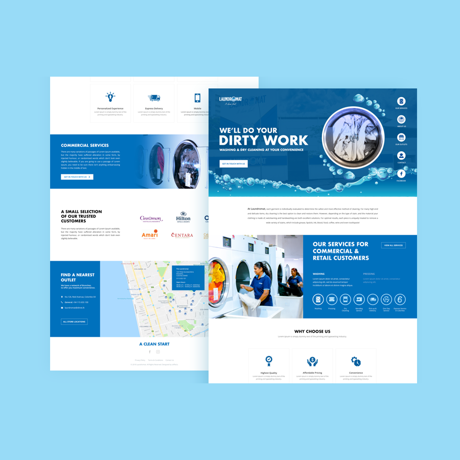
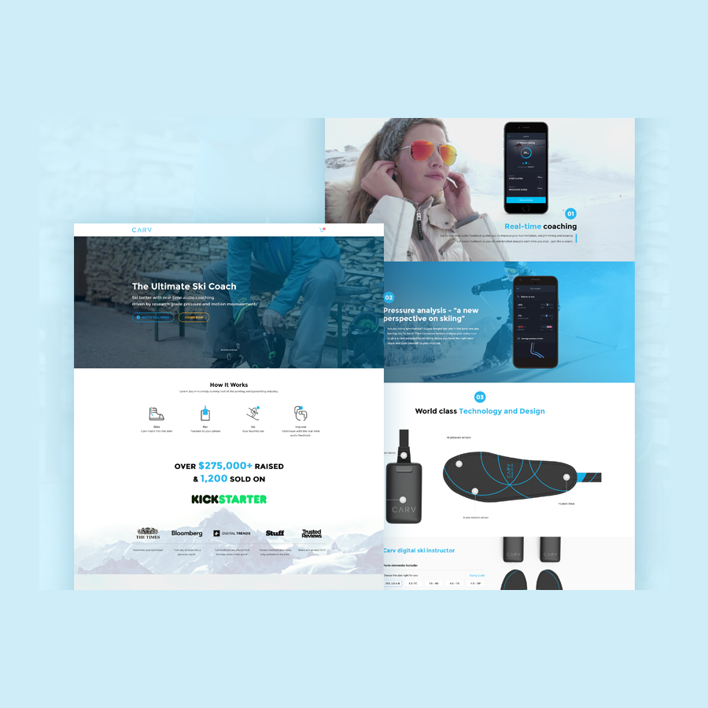
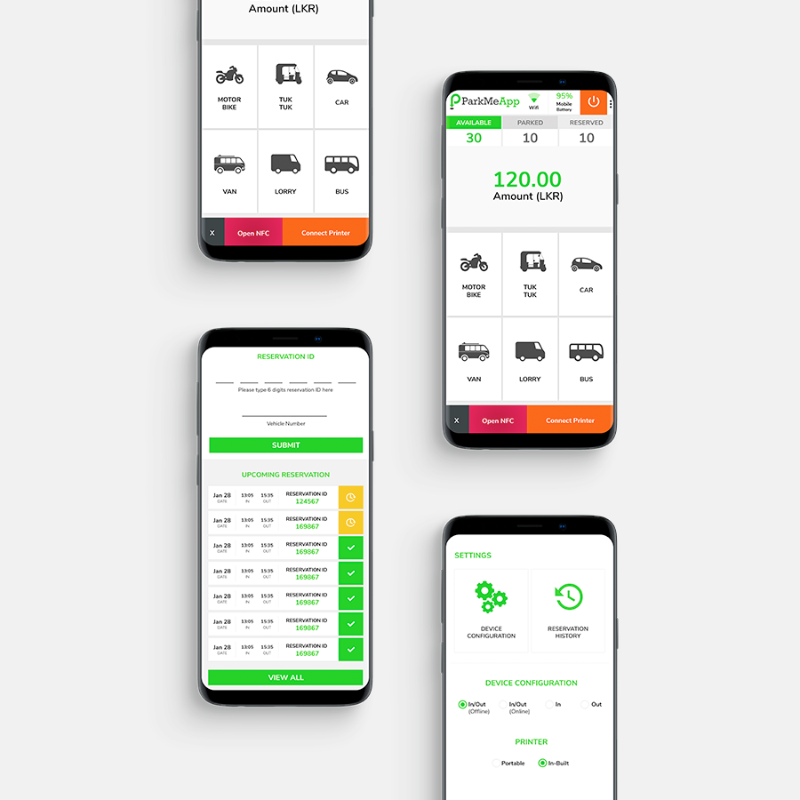
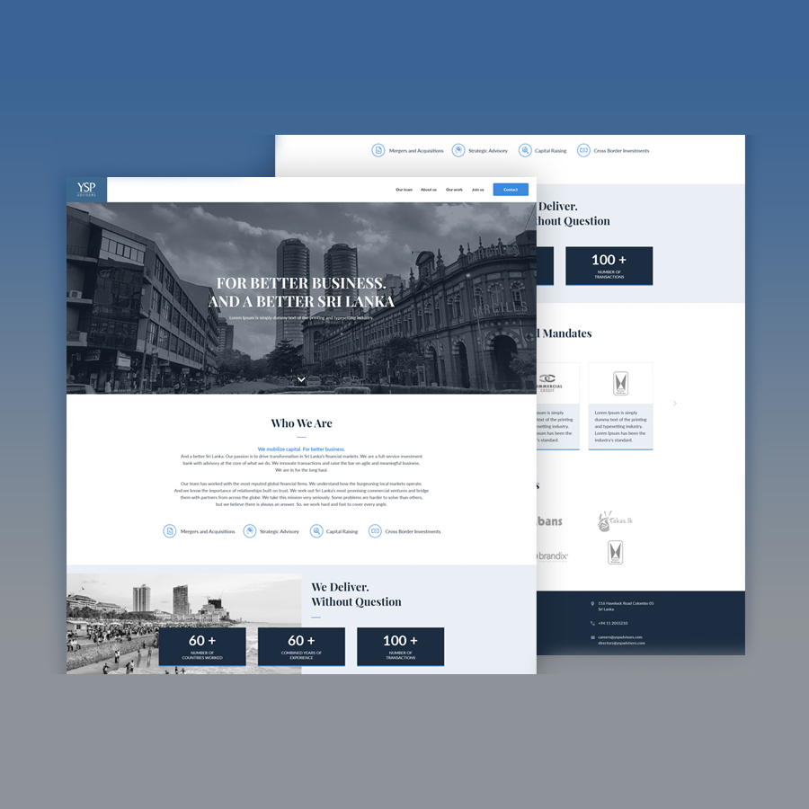

All Work
made with passion.
made with passion.
- LaundromatAn application developed and designed as a pioneer in laundry services in Sri Lanka, and is the largest commercial and retail laundry service provider. They have been providing the very best services in washing, pressing, and dry cleaning services.
- CarvA brand new website for Improve your skiing with real-time audio feedback on every turn. Get personalised skiing tips as you go and detailed analysis each time you stop – just like a ski coach.
- PMA NFC - HPMA NFC - H is a comprehensive application designed to manage Car Parks through a Handheld POS. It's a 360 solution for any type of a car park where it can all of the general operations.
 PMA Meter (Sri Lanka)PMA Meter is the first ever GPS based Taxi Meter App in Sri Lanka. It has developed in more customer-oriented design which has more usability and easy to operate.
PMA Meter (Sri Lanka)PMA Meter is the first ever GPS based Taxi Meter App in Sri Lanka. It has developed in more customer-oriented design which has more usability and easy to operate. Kuga HoldingsThe application developed for manage the primary product focus is premier, high-quality menswear which includes dress shirts, casual shirts, and corporate shirts (uniforms).
Kuga HoldingsThe application developed for manage the primary product focus is premier, high-quality menswear which includes dress shirts, casual shirts, and corporate shirts (uniforms).- YspadvisorsThe application YSP Advisors is a Sri Lanka focused, boutique investment bank that provide a range of advisory services, including , capital raising, strategic advisory and cross border investments.
- UbietyUbiety is the cloud collaboration platform that takes interoperability of video conferencing, web collaboration and phone conferencing to an unprecedented new technology.
- AltcoinAltcoin.io is a white label decentralized exchange.
- Breteau FoundationBreteau Foundation is a Digital Education and comprehensive teacher professional development can have on the motivation of children and progress in providing a quality education for all.
 CvshowcaseThe CV Showcase is a professional service which is ideal for both candidates who are on the hunt for suitable careers and companies that are recruiting novices as well as experts.
CvshowcaseThe CV Showcase is a professional service which is ideal for both candidates who are on the hunt for suitable careers and companies that are recruiting novices as well as experts.- DigitalCompassDigital Compass is the only educational game that gives kids the freedom to explore how decisions made in their digital lives can impact their relationships.
- Fisher MethodFisher Method is a online profit method.
- GreetlyAppGreetly is a revolutionized mobile app which allows you to send customized greetings to anyone, at anytime from anywhere while being 100% Eco-friendly with no paper use at all.
 KogrubKogrub is a food delivery application.
KogrubKogrub is a food delivery application.- MobileAppReviewMobileAppReview is a Delivering People Experience Find out more Why we don't see results The time that it takes Traditional methods of gathering data takes time. Information in employee appraisals and feedback take up time to process and are often misinterpreted. In a customer merchant relationship, the customer feedback may take a long time.
- SBAPSSBAPS - Business Bookings App
- SLINTECThe Sri Lanka Institute of Nanotechnology is a Sri Lankan research institute specializing in the field of nanotechnology.
- TrackieXTrackieX, Most advanced child tracking technology helps you ensure your child's safety by tracking the rel-time location of your child to keep them safe.
- Bizness AppsBizness Apps makes it possible for small businesses and our partners to build mobile solutions that compete with big brands and helps them grow.
- Should Your Business Build an App?Should Your Business Build an App? Find out if your business needs an app.